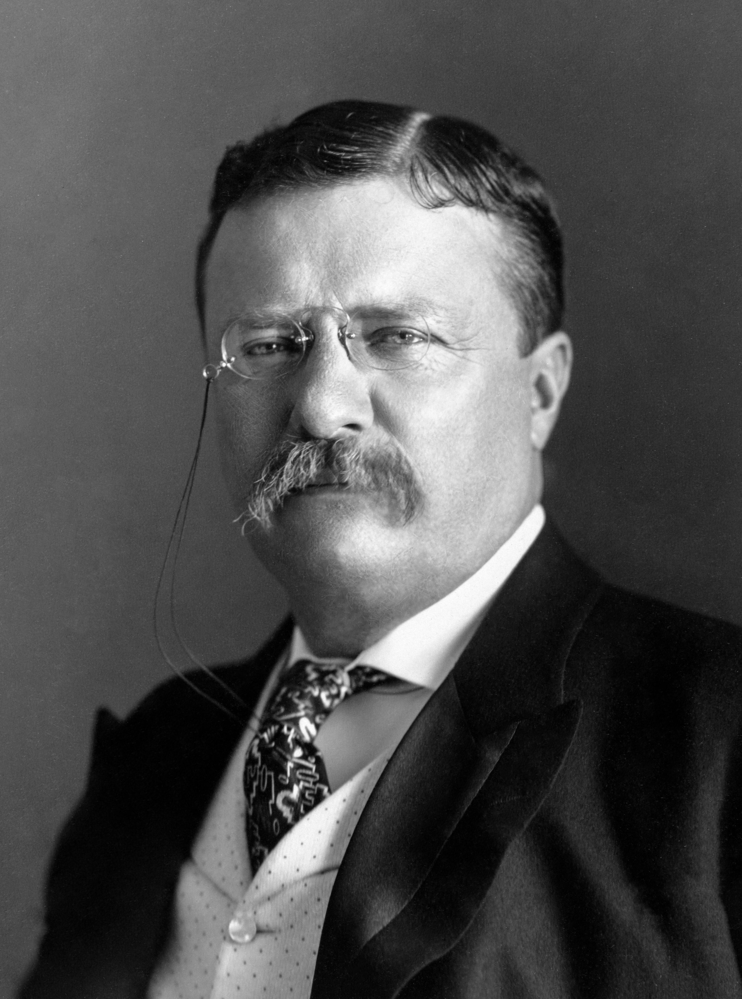

Abraham Lincoln:

Abraham Lincoln was the sixteenth president and was known for abolishing slavery in the United States.
He also helped win the Civil War and kept the nation from splitting apart.
Abraham Lincoln:
Abraham Lincoln was the sixteenth president and was known for abolishing slavery in the United States.
He also helped win the Civil War and kept the nation from splitting apart.
George Washington:

George Washington was the first president and led the colonies to victory during the Revolutionary War.
He created the rule that stated that a president could serve two four-year terms.
Thomas Jefferson:

Thomas Jefferson was the third president in the United States.
He spoke for the good of the people often and was the author of the Declaration of Independence.
Teddy Roosevelt:
Teddy Roosevelt was the twenty-sixth president and was known for being adventurous.
He was apart of the army at one point and won a Nobel Peace Prize for helping end the Russo-Japanese War.
Navigation: